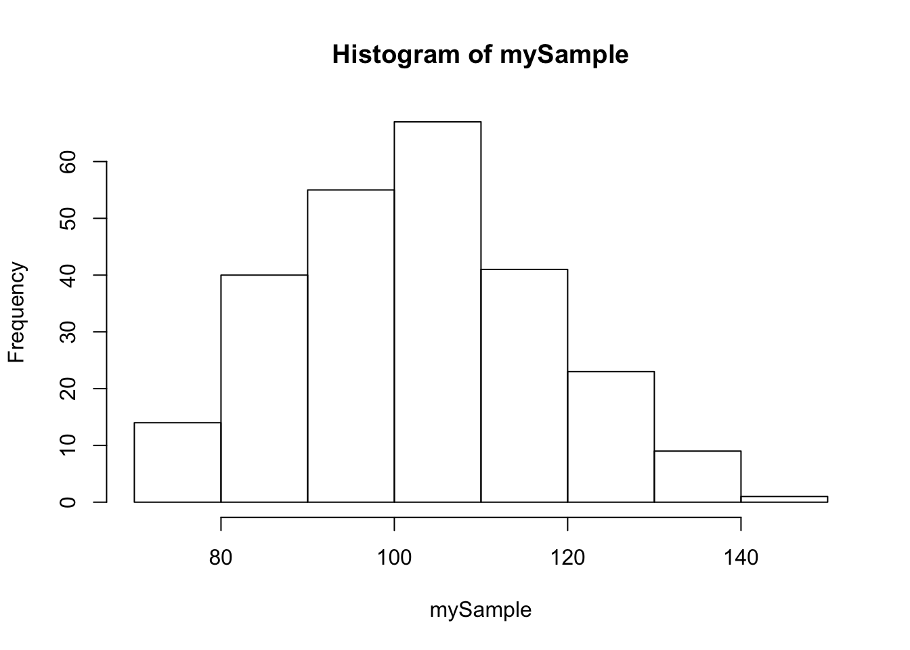
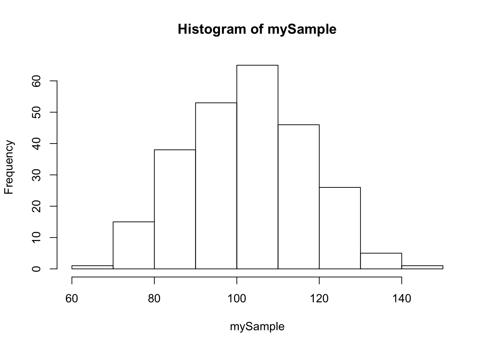
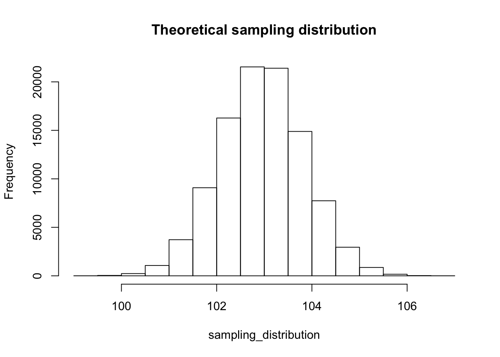
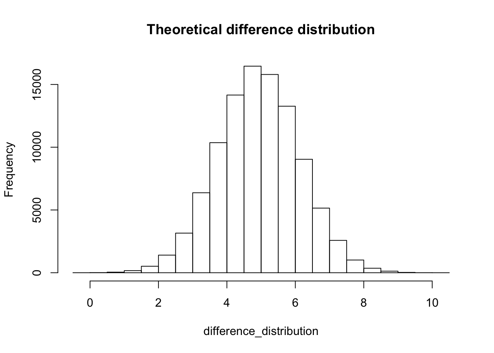
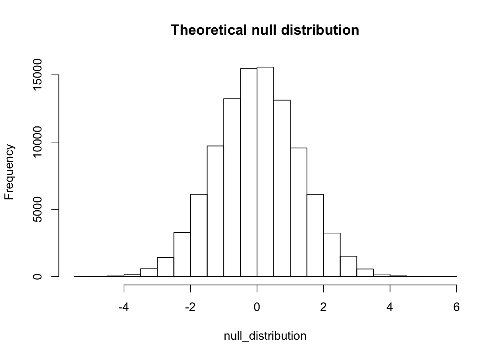
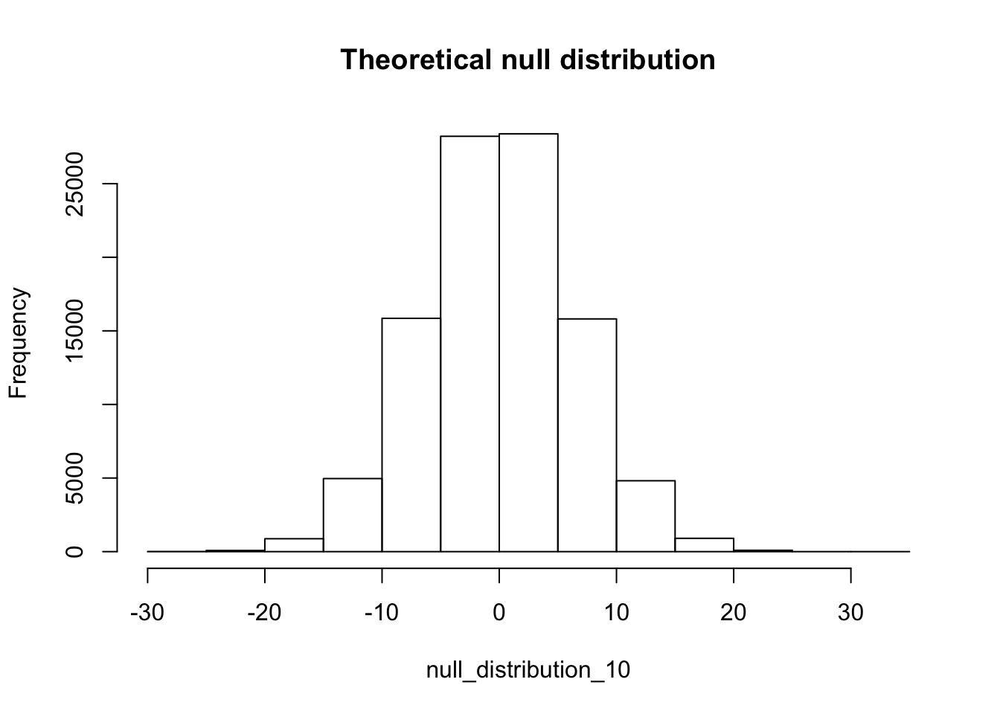

Week 3 Sampling distributions and building the logic of NHST
So this week is typically one of the more confusing weeks for those that do not have much background in stats and programming because I’m asking you to do two conceptually demanding things. From the stats side: I’m asking you to imagine that the sample data that you collect is not sui generis (I always wonder if I’m using that term correctly), but part of a larger theoretical distribution of possible (but materially non-existent) sample data sets. The number of these sets is indefinitely many… which is a way of saying really large without invoking notions of infinity.
On the programming side: I’m asking you to build simulations of these theoretical sampling distributions by using a for() loop; programming R to proceed in a recursive, iterative loop for a very larger number of instances.
In the class lecture we laid out the logic of the sampling distibution (of means), the difference distribution (of means) and the null distribution (of means). In the workshop we made it as far as simulating the sampling distribution and using it to obtain important measures (e.g., standard error) and walk through and example for() loop that can be used to generate the distribution of means. Here I’m going to extend that work to show how to get both the difference distribution and the null distribution. This inolve minor tweaks of what was done in class.
Please follow along by entering the commands into your own console. First let’s load in the appropriate packages for this week:
pacman::p_load(psych, tidyverse, multicon)3.1 The sampling distribution
To begin let’s start off with a control population. For the sake of example, let’s imagine that this population represents the obtained IQ scores of students in Tehran J. Davis High School (apparently I’m feeling myself) that were taught using a standard curriculum. The 5000 students (it’s a really big school) in this population have a mean IQ of 103 with a standard deviation of 14. Note that this mean and sd are FACTS… they are true values that exist independent of my measure. Also note that in real work, these truths about the population are rarely known.
We can create a simulated population using the follow chunk of code; note that anytime you are generating “random” distibutions or “random” sampling in R you’ll need to input the set.seed(1) command where I do to ensure that you get the same numbers I do:
# population of 5000 with an approximate mean = 103 and sd = 14
set.seed(1)
pop_basic <- rnorm(n = 5000, mean = 103, sd = 14)When we take a look at what the above simulation generates, we see that the obtained values are sightly different than requested (it is random after all). BUT AGAIN, for the puposes of example these are still the facts of the population.
mean(pop_basic)## [1] 102.9554multicon::popsd(pop_basic)## [1] 14.37227Wait… what’s that multicon::popsd() mess?!?!?
Remember that calculating the standard devation of a population is different than calculating for a sample, where the sample SD requires an adjustment for the degrees of freedom. Simply, the population SD uses \(N\) in the denominator, where the sample SD uses \(N-1\). The sd() fuction calculates sample SD. To get population SD, we can use the function popsd() from the multicon package.
From this population, the Princpal of TJD-HS tells us that we can only administer our IQ test to 250 students. This represents our sample:
mySample <- sample(x = pop_basic, size = 250)
psych::describe(mySample)## vars n mean sd median trimmed mad min max range skew
## X1 1 250 102.85 14.56 102.18 102.52 15.87 70.36 143.07 72.71 0.17
## kurtosis se
## X1 -0.46 0.92hist(mySample)
If we run the above code again, we see that we get different measures for mySample:
mySample <- sample(x = pop_basic, size = 250)
psych::describe(mySample)## vars n mean sd median trimmed mad min max range skew
## X1 1 250 102.29 14.59 102.64 102.27 14.65 69.19 143.07 73.88 0.01
## kurtosis se
## X1 -0.44 0.92hist(mySample)
and in neither case is the observed sample mean identical to the true population mean.
These differences highlight the notion of Variability due to chance-the fact that statistics (e.g., means, SDs) obtained form samples naturally vary from one sample to the next due to the particular observations that are randomly included in the sample.
The term sampling error is used to refer to variability due to chance, in that, the numerical value of a sample statistic will probably deviate (be in error) from the parameter it is estimating.
In class we mentioned that we can build a theoretical distribution of sampling error, a sampling distribution of means. Similar to what you accomplished in the workshop, this can be done with a for() loop that does the following:
- pull a sample of a given size from the population
- get the mean of that sample
- save that sample mean to a vector
- repeat 1-3
How many times do we repeat? Theoretically an infinite number of times. Because we can’t wait for infinity, lets just use a really big number like 100,000 (or 1e+05)
Buiding the sampling distribution (using pop_basic from above):
# create an empty vector to store the sample means
sampling_distribution <- vector()
# use set.seed to ensure our numbers match:
set.seed(1)
# start our loop at 1 and stop it at 100,000
for (i in 1:1e+05) {
# 1. get a sample of 250 students from pop_basic:
mySample <- sample(x = pop_basic, size = 250)
# 2. get the mean of the obtained sample:
mySample_mean <- mean(mySample)
# 3. save that mean to our vector, sampling_distribution in the i-th location.
# (Think of this like telling R what line of the paper to write on so that you
# don't overwrite your data)
sampling_distribution[i] <- mySample_mean
# 4. everything is repeated in the brackets until i=100000
}Lets take a look at our sampling distribution:
hist(sampling_distribution, main = "Theoretical sampling distribution")
and the grand mean of the sampling distribution (the mean of means if you will):
mean(sampling_distribution)## [1] 102.9521Again not quite the TRUE mean of the population, but pretty darn close.
3.2 Standard error of the mean
We also noted that the standard error (SE) of the mean is simply the standard deviation of the sample distribution. That is, how much does the mean vary due to chance provided repeated sampling. In this case it can be found by:
sd(sampling_distribution)## [1] 0.8837669However, deriving the SE in this way assumes that we are free to sample and re-sample the population a large number of time (in this case 100 thousand) when in reality we may have neither the time, resources or inclination to do so. Instead, we use the following equation to provide an estimate of SE provided our sample:
\[SE=\frac{SD_{sample}}{\sqrt{N_{sample}}}\] So in this case, for a given mySample from the population pop_basic:
set.seed(1)
mySample <- sample(x = pop_basic, size = 250)
mySample_se <- sd(mySample)/sqrt(250)
show(mySample_se)## [1] 0.8958658Compared to the theoretically derived SE above, the estimate is not too far off (0.895 v. 0.884). In class, we went a step further and estimated SE for each individual sample in our distribution and compared the mean estimated-SE to the stardard deviation of the entire distribution. Note how this changes our steps slightly:
# create an empty vector to store the sample means create another to store sample
# SEs
sampling_distribution <- vector()
sample_ses <- vector()
# use set.seed to ensure our numbers match:
set.seed(1)
# start our loop at 1 and stop it at 100,000
for (i in 1:1e+05) {
# 1. get a sample of 250 students from pop_basic:
mySample <- sample(x = pop_basic, size = 250)
# 2. get the mean of the obtained sample; also get the estimated SE:
mySample_mean <- mean(mySample)
mySample_se <- sd(mySample)/sqrt(250)
# 3. save that mean and se the respective vectors:
sampling_distribution[i] <- mySample_mean
sample_ses[i] <- mySample_se
# 4. everything is repeated in the brackets until i=100000
}and now the SE calculated from the distibution compared to the mean estimated SE:
sd(sampling_distribution)## [1] 0.8837669mean(sample_ses)## [1] 0.908183Again, not identical, but pretty close.
3.3 The difference distribution
Imagine for the sake of example, we are interested in IQ. A central debate (as I understand the literature) at present is whether IQ is inherently static or can be improved with education. Indeed the implication of this can be quite controversial (IQ testing is like the third rail of understanding intelligence… making statements about intelligence is like the third rail of psychology… but I digress).
In addition to our population of students taking the basic cirriculum, we also have an equal number of students taking an advanced cirriculum. Assuming that we have already controlled for other factors (e.g., baseline IQs from both groups the same before treatment) we would like to address the following question using data obtained from each group: “Does the enhanced cirriculum result in higher IQ?”
First let’s create our populations:
set.seed(1)
pop_basic <- rnorm(n = 5000, mean = 103, sd = 14)
pop_advanced <- rnorm(n = 5000, mean = 108, sd = 13)Again, you’ll note that in this example we’re omnipitent and know the truth of the matter (the true measures)… in the real world no one is all-seeing and knowing. You’ll also notice that I kept the SD for each population roughly equivalent. This homogeniety of variences (i.e., SDs should be approximately equal) is another assumption of our non-parametric tests (like ANOVA). Here I’ve made it so, but if in true the variences are not equal then we may have to adjust how we proceed with our analyses. More on that in a few weeks!
And now to create our difference distribution using the same programming logic as above:
# create an empty vector to store the difference in means
difference_distribution <- vector()
# use set.seed to ensure our numbers match:
set.seed(1)
# start our loop at 1 and stop it at 100,000
for (i in 1:1e+05) {
# 1. get a sample of 250 students from pop_basic, then get a sample from
# pop_advanced:
mySample_basic <- sample(x = pop_basic, size = 250)
mySample_advanced <- sample(x = pop_advanced, size = 250)
# 2. get the means of the obtained samplse;
mySample_basic_mean <- mean(mySample_basic)
mySample_advanced_mean <- mean(mySample_advanced)
# 3. save differences between means to our vector, difference_distribution in the
# i-th location.
difference_distribution[i] <- mySample_advanced_mean - mySample_basic_mean
# 4. everything is repeated in the brackets until i=100000
}And now to take a look at the resulting difference distribution:
mean(difference_distribution)## [1] 4.921686hist(difference_distribution, main = "Theoretical difference distribution")
As anticipated (because we know all) we end up with a difference distribution with a mean difference of about 5. What we are asked to consider is whether this difference (or any observed difference, really) is enough to say that the likelihood of it occuring by chance is sufficiently small (i.e. is \(p < .05\)). For this we need to create a null distribution.
3.4 The Null distribution
The logic of constructing a null distribution rests on the claims made by the null hypothesis, that the means of the two (or more) populations in question are identical:
\[\mu_1=\mu_2\]
In a larger sense, if the null hypothesis is indeed true it suggests that the two populations may indeed be one single population. Here, we know that the null hypothesis is NOT true (again, all seeing and knowing).
mean(pop_advanced)## [1] 107.8715mean(pop_basic)## [1] 102.9554# are the 2 means exactly equal?
mean(pop_advanced) == mean(pop_basic)## [1] FALSEIn the context of our everday experiments, we do not know whether the null is indeed true or not. Based upon the samples that we take we make an inference as to whether we have sufficient evidence to reject the null. We do so if the probability of our observed data, given the null is true, is sufficiently low. In other words, here we are asking: “IF the null is true, THEN what is the likelihood that we would get our observed differences in means. If the likelihood is low, then we may have reason to believe the null hypothesis to be suspect.
Returning to the logic of the null distribution, it assumes that our experimental group, pop_advanced, and our control group, pop_basic are from the same population. Thus, any samples obtained betwixt should be equal, and the differences in sample means should approximate 0 (never exactly 0 due to sampling error). However, by virtue of our experimental design we are implicitly assuming that, in fact the two are different from one another. This implicit assumption means that the null distribution cannot be created by creating a difference distribution between the two groups.
So how to go about the business of creating a null distribution, then? We create a difference distribution that guarentees that all data is from the same population. In this case we are creating a difference distribution where we take repeated samples from the same population and compare their differences. Based on this distribution, we can make claims regarding the probability of observed differences between scores assuming they are from the same population. Again sampling error guarentees that these differences are not exactly zero.
Typically the population we choose is our control population (group). In this case the logical control is pop_basic. Modifying the for() loop that we used for the difference distribution, we create a null distribution like so:
# create an empty vector to store the difference in means
null_distribution <- vector()
# use set.seed to ensure our numbers match:
set.seed(1)
# start our loop at 1 and stop it at 100,000
for (i in 1:1e+05) {
# 1. get a sample of 250 students from pop_basic, then get another 250 students
# from pop_basic:
mySample_basic_1 <- sample(x = pop_basic, size = 250)
mySample_basic_2 <- sample(x = pop_basic, size = 250)
# 2. get the means of the obtained samples;
mySample_basic_1_mean <- mean(mySample_basic_1)
mySample_basic_2_mean <- mean(mySample_basic_2)
# 3. save differences betwwen means to our vector, difference_distribution in the
# i-th location.
null_distribution[i] <- mySample_basic_1_mean - mySample_basic_2_mean
# 4. everything is repeated in the brackets until i=100000
}And now to take a look at the resulting null distribution:
mean(null_distribution)## [1] -5.269745e-05hist(null_distribution, main = "Theoretical null distribution")
In class we made mention that due to the assuption of equal means and equal variences that the null distribution should approximate the form of the standard distribution were \(\mu=0\) and \(\sigma = 1\). This fact allows us to say something about the probability of an observed difference as a probability of obtaining a Z-score that far removed from 0.
3.5 Probabilty of observed differences
Continuting on from the previous section, we have our null distribuition of IQ scores, appropriately named null_distribution. This is the theoretical distribution of differences assuming the two populations are the same. Simply put, this is the distribution of differences we might expect if our advanced cirriculum did not have any impact. You’ll note that even assuming that the two groups are identical still yeilds some pretty large differences by chance:
max(null_distribution)## [1] 5.751995min(null_distribution)## [1] -5.118378but that the probability of those extremes is very, very low (but still exists which is why we never prove the alternavtive hypothesis). Let’s say I take a sample from pop_basic and pop_advanced and find that my means differ by 3. Given the null distribution, what is the probability that I will observe a difference this large? To derive this probability, we take advantage of what we know about the standard distribution, where we have a known probability of obtaining any given Z-score.
The process of answering the above is as follows: 1. transform the observed difference to a Z-score using the mean and SD of the null distribution; 2. calculate the probability of that extreme of a score.
Here is step 1:
# 1. convert the observed difference to a z-score:
Zscore <- (3 - mean(null_distribution))/sd(null_distribution)
show(Zscore)## [1] 2.390864I want to pause here to note that the obtained Z-score is positive. As a result the score is on the right side of the distribution. Our probability function, pnorm() returns the probability of an obtained score or lower (the cummulative probability). However, we want the probability of the observed score or more extreme. In this case more extreme means greater than. Conversely if the observed Z score is less than 0, then more extreme means less than. I bring this up as this determines what value we use to calculate the desired probability. In the latter case, less than we can simple take the output of pnorm() and call it a day. However, in cases like ours, when \(Z>0\) we need to use 1-pnorm().
OK, on to the calculation:
Zscore <- (3 - mean(null_distribution))/sd(null_distribution)
1 - pnorm(Zscore)## [1] 0.008404386Based on a criteria of rejecting the null if \(p<.05\) we would reject here. BUT NOTE: not necessarily because it’s less than .05. Remember that if I have a two-tailed test, my criteria requires that I split my \(\alpha\). So in truth I need to obtain a value less than .025 in either direction.
3.6 A note about sample size
So I got a pretty low p-value, but you might say it was expected given that my sample size was 250 for each group. Let’s see what happens if I drop the sample size down to 10 students per group, creating a new null distribution, null_distribution_10:
# create an empty vector to store the difference in means
null_distribution_10 <- vector()
# use set.seed to ensure our numbers match:
set.seed(1)
# start our loop at 1 and stop it at 100,000
for (i in 1:1e+05) {
# 1. get a sample of 250 students from pop_basic, then get another 250:
mySample_basic_1 <- sample(x = pop_basic, size = 10)
mySample_basic_2 <- sample(x = pop_basic, size = 10)
# 2. get the means of the obtained samplse;
mySample_basic_1_mean <- mean(mySample_basic_1)
mySample_basic_2_mean <- mean(mySample_basic_2)
# 3. save differences betwwen means to our vector, difference_distribution in the
# i-th location.
null_distribution_10[i] <- mySample_basic_1_mean - mySample_basic_2_mean
# 4. everything is repeated in the brackets until i=100000
}What does this distribution look like?
hist(null_distribution_10, main = "Theoretical null distribution")
mean(null_distribution_10)## [1] -0.01377723And let’s take a look at the probability of an observed difference of 3 in this case. Not that I’m using the pnorm() shortcut so I don’t need to calculate my Z by hand:
1 - pnorm(q = 3, mean = mean(null_distribution_10), sd = sd(null_distribution_10))## [1] 0.3187986As we can see, size matters. Given that we are omnipotent in this case, we know the truth of the matter is that the two populations are in fact different, and that the mean of pop_basic is not equal to the mean of pop_advanced. Thusm what we have here is a failure to reject the null hypothesis when it is indeed false. Hmm, what kind of error is that again? This last example is going to figure prominently in our discussions of power and what power is, properly defined. For now, I think this is a good place to stop this week.
For additional practice, walk through and attempt to recreate (in your own notebook) the week3_inclass.Rmd located on BOX in this weeks workshop folder. Be sure that you understand the logic of your steps, and how I’ve answered the questions presented in the file. This should be good prep for your homework.